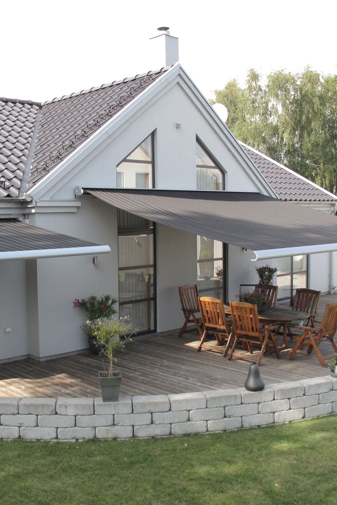
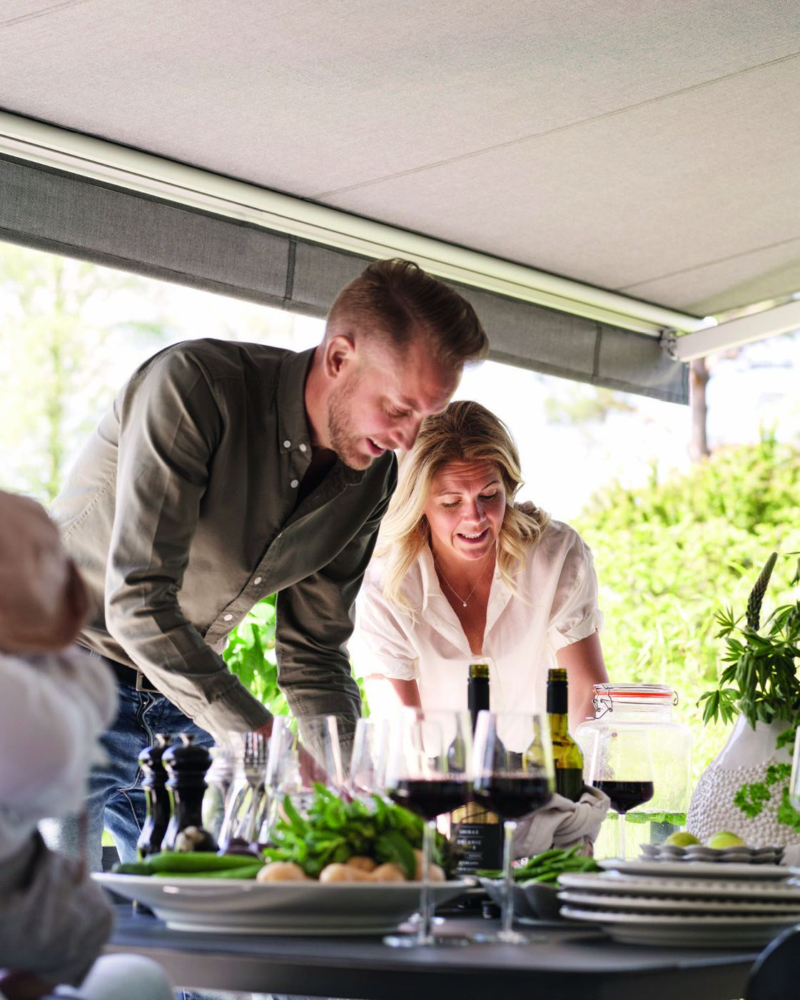
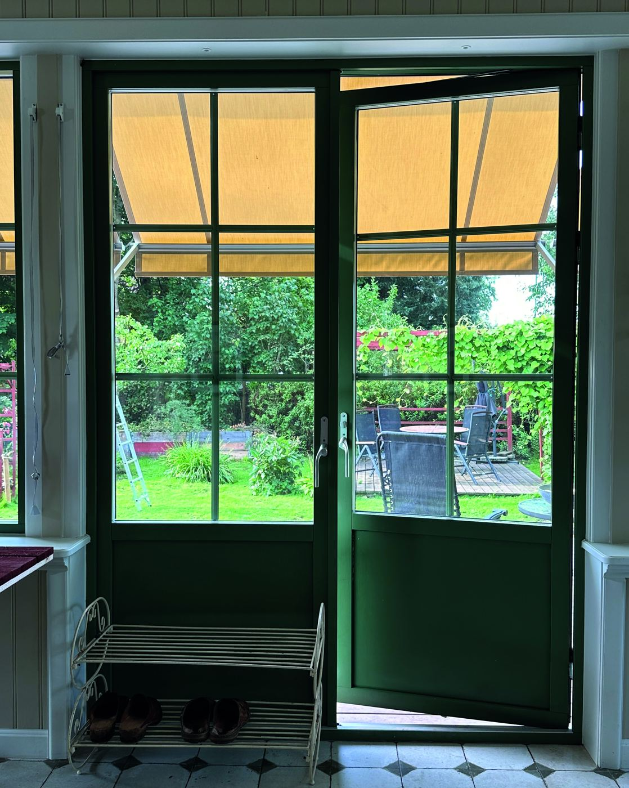
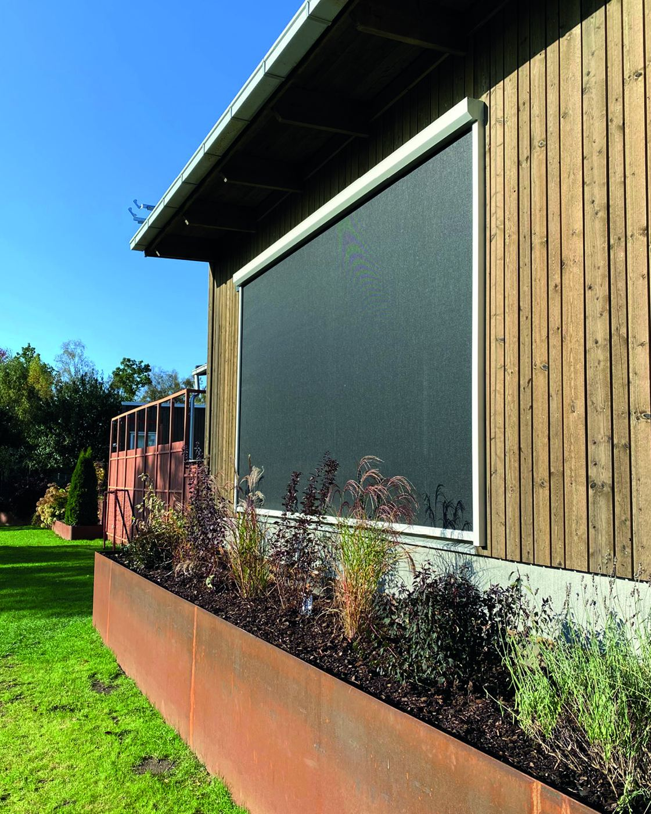
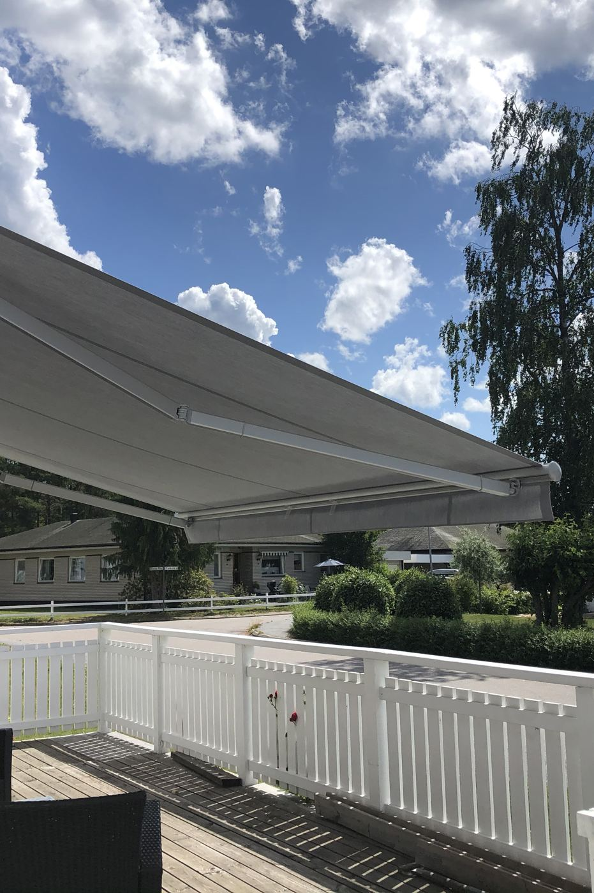
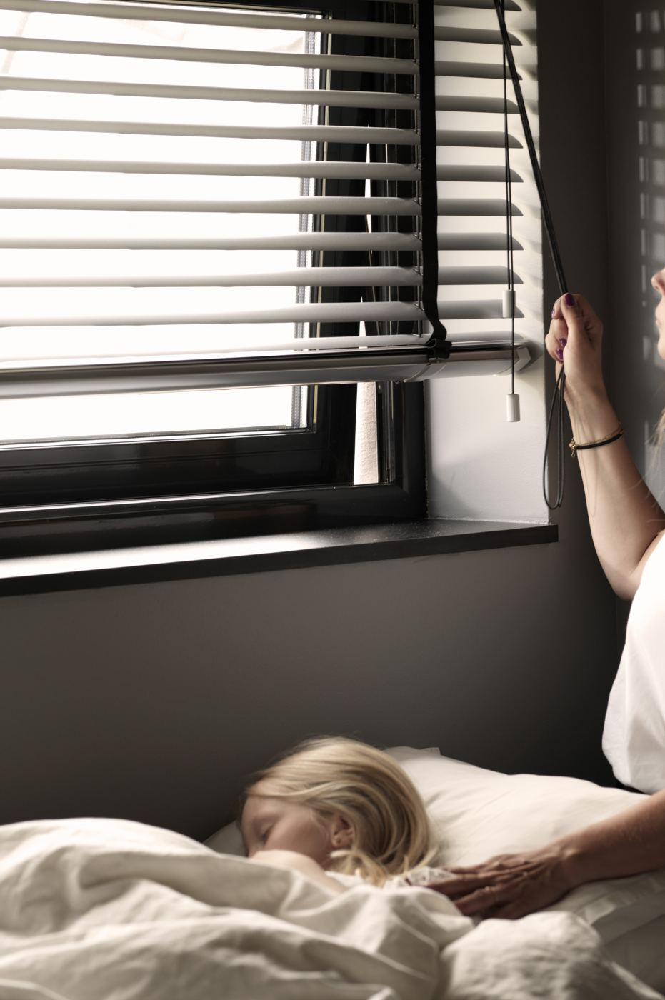
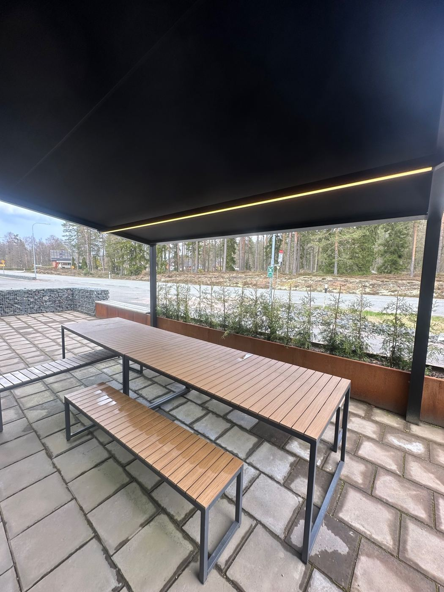

Markiser i Helsingborg, uppmätta hemma hos dig
Vi kommer hem till dig, mäter och visar vävprover på plats. Markiserna är svensktillverkade av Hestra Markis och vävarna kommer från Sandatex. Skicka en förfrågan, så ringer vi upp samma dag.
- Svensktillverkat av Hestra
- Väv från Sandatex
- Hembesök utan kostnad

Vi ringer upp samma dagnär du har skickat en förfrågan
Det här kan vi hjälpa dig med
Allt måttbeställs efter ditt hus. Vi visar alternativen vid hembesöket.

TerrassmarkiserSkugga över altan och uteplats, med vev eller motor. Upp till sju meter bred i en sektion.Läs mer
FönstermarkiserHåller värmen ute innan den når glaset. Fallarm, korgmarkis eller markisolett.Läs mer
VertikalmarkiserScreen framför stora glaspartier och inglasade uterum.Läs mer
Ny väv på din markisByt bara väven när stommen fortfarande håller. Vi gör det på alla fabrikat.Läs mer
Invändigt solskyddPersienner, rullgardiner, plissé- och lamellgardiner, måttbeställt.Läs mer
PergolamarkiserTak över uteplatsen med väv som rullas ut, även för företag.Läs merSå går det till
- 1
Du skickar en förfrågan
Berätta vad du är intresserad av. Mått behövs inte.
- 2
Vi ringer upp samma dag
och bokar en tid som passar dig.
- 3
Hembesöket
Vi mäter, tittar på fasaden och hur solen ligger. Du väljer väv från riktiga prover.
- 4
Offert
Du får ett skriftligt förslag. Inget är bindande innan du har sagt ja.
- 5
Montering
En terrassmarkis sätts oftast upp på några timmar.
Varför det spelar roll var i Helsingborg du bor
Vid sundet blåser det mer än inne i landet, och en markis i västerläge får eftermiddagssolen rakt in från vattnet. På Tågaborg och Ramlösa sitter markisen ofta på en putsad eller tegelklädd fasad, medan nyare hus på Norr har stora glaspartier som passar bättre för vertikalmarkiser. Det är sådant vi tittar på vid hembesöket.
Vill du ha skugga till våren?
Hör av dig nu, så hinner vi mäta och montera före säsongen.
Boka hembesök